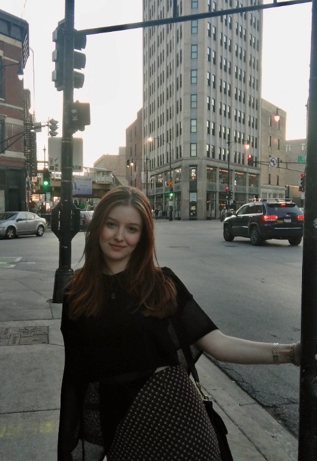

I am an award-winning student journalist from the Chicago suburbs, and that Midwestern upbringing still shapes how I see the world. Growing up in Glen Ellyn, I learned early that the most important stories rarely come from the loudest voices. They come from neighbors, local institutions, and the quiet details of everyday life. I’m now studying at the S.I. Newhouse School of Public Communications at Syracuse University as a Leadership Scholar, where I’m building the skills to tell those stories with rigor and care.
In my reporting, I’m drawn to the space where data meets narrative: the stories ordinary people are living inside big systems, and the details that make those systems feel human. A budget line, a voting trend, or a policy change can seem abstract until you meet the person it touches. My work aims to connect the two, using data to show scale and storytelling to show meaning.
My journalism roots run back to Chicagoland, where I led my high school newspaper as Editor-in-Chief and learned what it means to hold a community’s trust. Today, I carry that responsibility into political and data-driven reporting, with the goal of helping readers understand not just what is happening, but why it matters to the people living it.